Свобода от усталости
В гору и против ветра больше не нужно тяжело крутить. Вы едете быстрее и дальше.
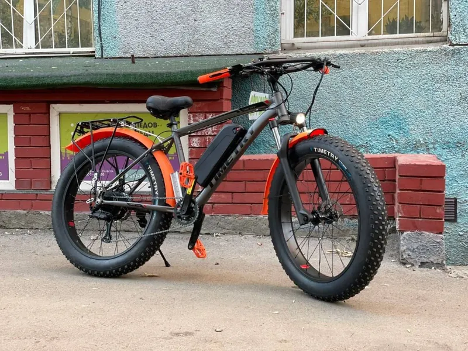
Электрификация · Новосибирск
Быстро, с гарантией и только качественное, проверенное оборудование. Новый уровень вашего велосипеда.
Что это
Электрификация — это установка надёжного мотора и аккумулятора на ваш привычный байк. Самый быстрый и выгодный способ превратить обычный велосипед в ежедневного помощника.
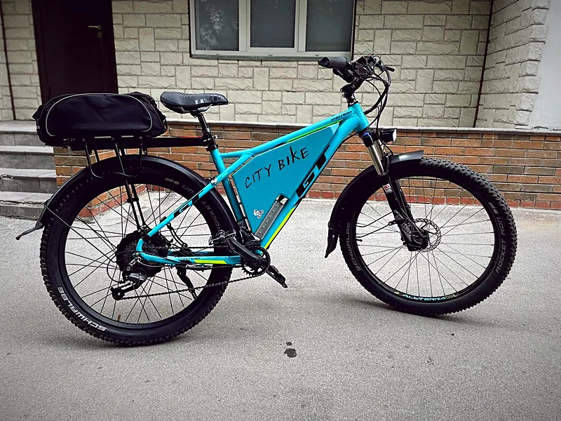
В гору и против ветра больше не нужно тяжело крутить. Вы едете быстрее и дальше.
Забудьте о пробках, душных автобусах и поиске парковки.
Обслуживание в десятки раз дешевле содержания авто, а полный заряд стоит копейки.
Длинные и сложные дороги становятся любимыми маршрутами для прогулок.

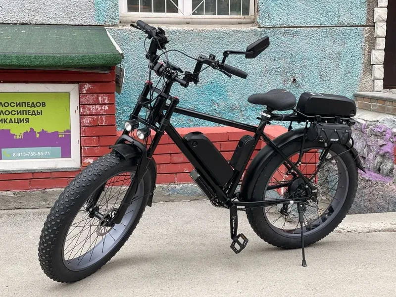
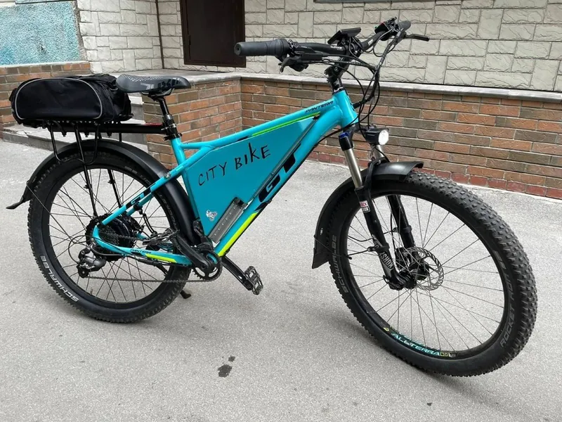
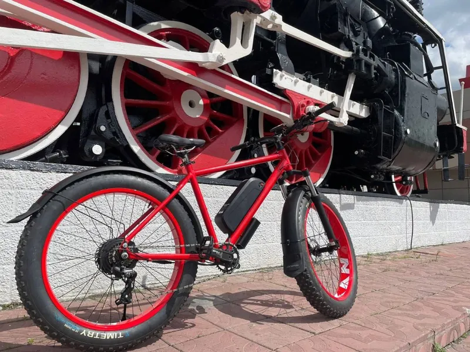
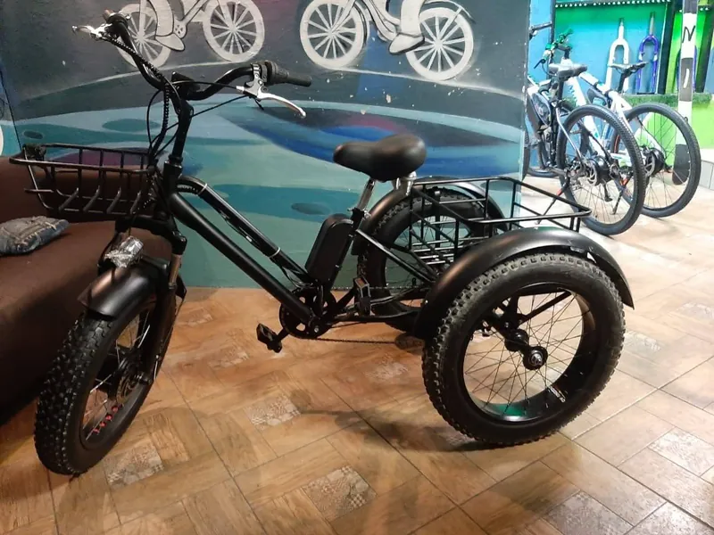
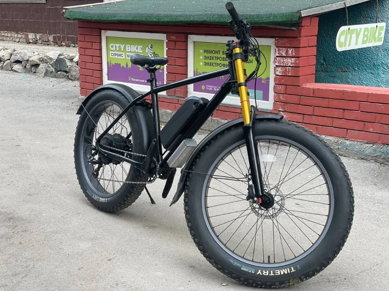
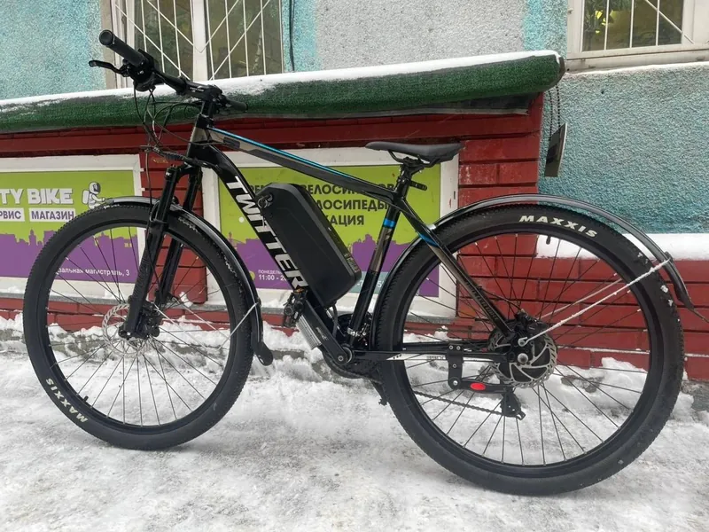
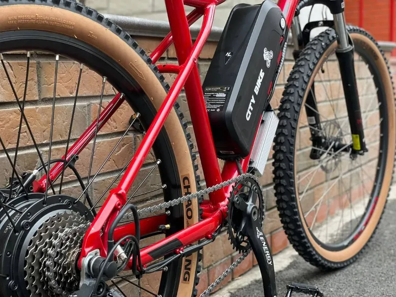
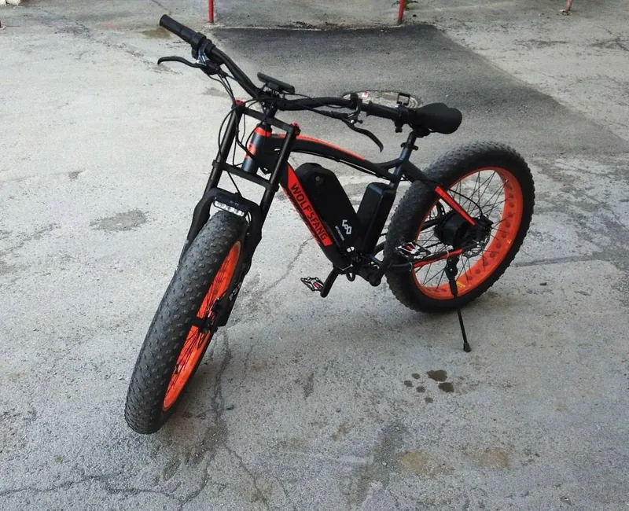
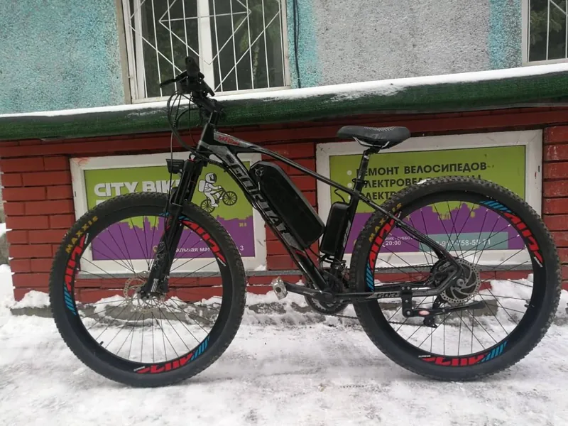
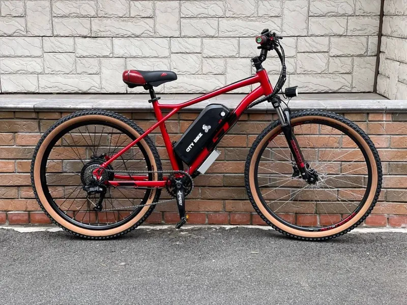
Это установка мотора и аккумулятора на ваш привычный велосипед. Быстрый и выгодный способ превратить его в ежедневный транспорт.
Установка комплекта под ключ от 8 000 ₽, комплекты на витрине. Посчитать полную конфигурацию можно в калькуляторе.
Да, устанавливаем как наш, так и ваш комплект.
Инженеры подберут комплект под ваш велосипед и задачи или соберут его индивидуально. Звоните Евгению или Максиму.
Новосибирск, Вокзальная магистраль, 3, цоколь, въезд со двора. Ежедневно с 11:00 до 20:00, кроме воскресенья.